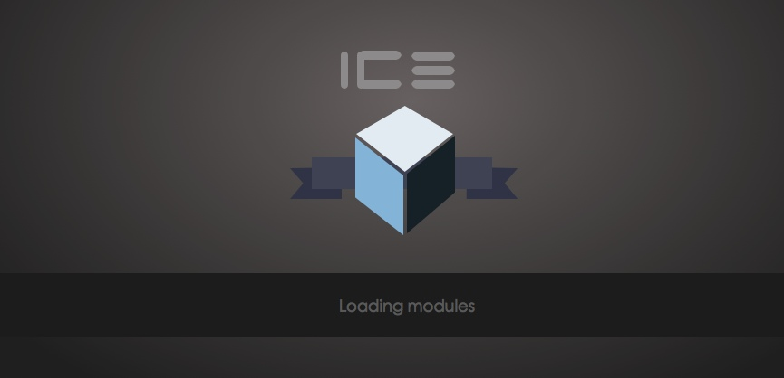
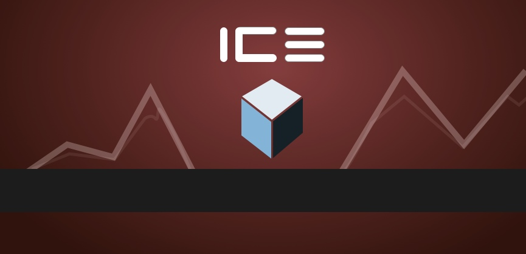
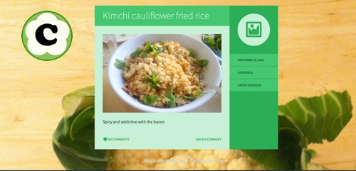
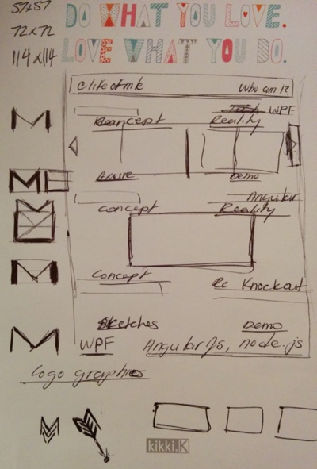

Good design is good business
Thomas Watson
Branding
ICE Rebranding
I was tasked to come up with a logo design for a system that had the acronym of I.C.E. The existing splash screen was a picture of a glacier and the logo was just the words ICE. The system was used in the financial industry which was a platform for traders in a leading investment bank in London, UK. To modernized the logo, I asked the stakeholders about different ideas that they had for the application logo and splash screen. Using that information I was able to come up with different concepts and designs. I used the application called Sketch for Mac OSX to create the diagrams below.
Iterative
Initial ideas ranged from different people voicing different desires. Using that as a base, I created some quick logos and showed them around to the team. General feedback was used to pick the winner from the pack.

Alternative
One of the favourite design was to have the ICE cube logo to look like a shield. However with the lack of brand colour and feel of a financial system this design was scraped.
{kind=link}
Final Product
The final design is shown below with the red background. This fits more inline with the client's brand colours. The mountains are a functional design additive as it provides visual appeal but also simulates charts and graphs that appear in the system.
{kind=link}
MyCauli
MyCauli is a food startup that sells cauliflower rice. They approached me with the desire to create a logo for them as they were trying to increase their web and marketing presence. The client didn't want any cartoon characters as a logo either. To create a logo for a humble vegetable such as cauliflower was an interesting challenge for myself as it was out of the world of technology. The basis of the design was to start by sing the colour palette of white and green as those synonmous with cauliflower. Circles were used to associate commonality of the shape of the cauliflower. In the end, the client was happy with a logo that is simple, looks like cauliflower but stands out in a bunch.
The Logo
Circles in a white and green colour palette. The font chosen for the "C" was chosen to be a rounded font to resemble the cauliflower shape.
Web Branding
Fresh and new is something the client wanted. The brand new logo stands out well against the wooden background of their blog. The wooden background gives a farm and fresh food on the table vibe.
Michael Le
My own logo. I didn't ever think that I would need my own logo. However that perception changed when I started working on this portfolio. What should the favicon look like? A globe, a question mark, the letter M? How should this "M" look like?
Sketches
All designs starts off with a sketch. Here are some sketches I made on what my logo may look like. There are so many M & L logos online. Had to find one that represented me but I just ended up drawing the Gmail logo quite often.
The stationary was a gift from my fiancee from this Australian store called Kikki K, this was the 3AM Inspiration Notepad
My Logo
The final version of my logo incorporates the M and the L together. The M does not have much on the left hand side to make the L stand out more. Together they form a nice rectangular shape and the blue is a a strong shade that will stand out from any distance or browswer tab. This is my logo for myself, Michael Le.